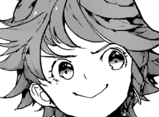
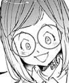
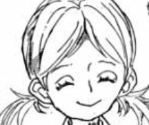
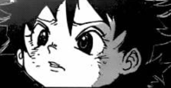
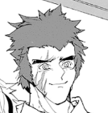
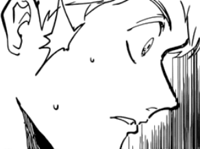

"He's probably not in big trouble... he can just punch them all in the face..." you whisper to yourself.
You both head outside carefully, paying attention to every move in detail. It seemed that quiet spaces were even more petrifying here as we'll never know when one could come dashing out.
On the other side of the road, was a slightly less abandoned cottage. Its windows have all been shattered but the inside has cleaner, less stuffy air.

"I'm Bell! You?"
You tell her your name.
She tells you more about herself, how she's lost her family and became an orphan on the streets. A group of purebloods picked her up and practically raised her.
Going down another hidden area, an unnoticable door handle takes shape. However, it opens up from the inside and you hide behind her.
"Bell! You're back! Let me see your scars?" says a woman with round glasses, pink uniform and a bright smile.

"I'm fine Lilly" she says while tilting her head towards you. "She's also a pureblood."
"Ooooohhh~ Let me see it!"
Inside, you unveil your hoodie and she screams in a high-pitched tone.
"Lilly! Quiet down! I know you're excited but-" a tall, buff man reminds her. 
"Welcome, you'll be safe with us." a girl with a warm smile comes to tone her down a bit.
Many more people appear and they all greet Bell and soon enough, you start opening up to them about who you are and how you've lived. Being reminded of all the purebloods missing, they get riled up.
"I'll avenge Wendy soon, the moment I see him, he'll be unrecognizable." Pin says.
"You must never meet him. He'll seduce you like a snake then use you as a test subject" says Greta solemnly.
"Dinner time!" says Kole, a lanky 15-year-old, as he hands them fresh berries, "Eat up guys!"
Surprised, you remember the reason you came here but feel its too late. So you tell them about the alternate universe, the bridge and the place you lived in.

"Hey, doesn't that sound like Mr. Devil's garden mansion?" says Chip, a puny boy with spiky hair.
Now, you ponder about the truth of your family. What were they hiding? And why?
"Then the way out must lead to my world! Let's go to Nicholas's place. He'll know the way." you suggest.
They look at each other and think of a plan. 
"Then, I'll go with you alone" Pin says, "Just to be safe."
You both leave and you try to remember the direction they took him. After quite some time, you've entered into the woods and he points to the direction of the 'way-out'. In a moment, you find the cottage and to your surprise, Nicholas is inside. You enter in first.
Stunned at the sudden entrance, he prepares for an enemy but as soon as he notices it was you, he touches your shoulder and shake you forcefully.
"Why didn't you take the potion?!" he shouts, "What about fa-" 
Before he could finish, Pin lunges in the room with a weapon in hand. Without warning, Nicholas takes the potion in your satchel and drinks the contents within. In a second, he changes form, like one of those demons, and subdues him before he could do anything.
"Ni-nicholas? Wh-what was that potion? What have you been doing here?"
To be continued...
There's more choices to select and more truth to be revealed.